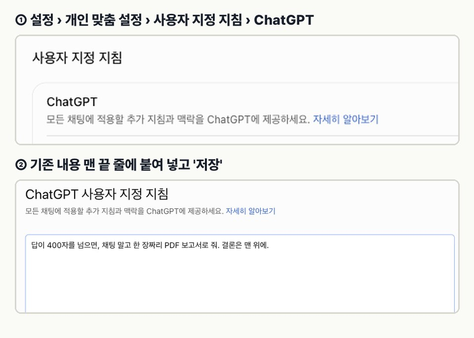
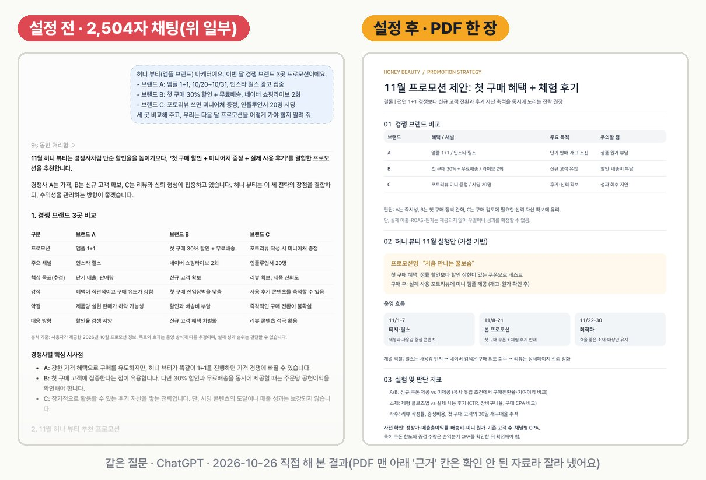

AI 답 길어서,
스크롤만 내린다면
같은 질문을 두 번 해 봤어요. 설정 전엔 2,504자짜리 긴 채팅이 왔고, 설정에 한 줄을 넣은 뒤엔 결론이 맨 위에 있는 PDF 한 장이 왔어요. 긴 답은 다 읽지 말고, 맨 위 결론만 보고 고르면 돼요.
01설정에 그대로 붙여 넣는 한 줄
한 번 넣어 두면 그다음 새 채팅부터 모든 대화에 적용돼요. 이미 다른 지침이 있으면 맨 끝 줄에 붙이면 돼요.
답이 400자를 넘으면, 채팅 말고 한 장짜리 PDF 보고서로 줘. 결론은 맨 위에.
💡 짧은 질문("앰플이랑 세럼 차이, 한 줄로")은 그대로 짧은 채팅으로 왔어요. 길어질 질문만 보고서로 바뀌어요.
02넣는 곳
설정 › 개인 맞춤 설정 › 사용자 지정 지침 › ChatGPT → 칸 맨 끝에 붙여 넣고 '저장'. 일반 채팅과 '개인화됨' 임시 채팅에 적용돼요. 임시 채팅을 '개인화되지 않음'으로 쓰면 이 지침도 빠져요.

설정 › 계정 › Claude 지침 칸에 넣고 '변경사항 저장'. 같은 문장을 넣어 보니 Claude는 문서(Claude Docs)로 만들려고 했어요. 다만 시크릿 채팅에서는 문서를 못 만들어서 채팅 안에 보고서 모양으로만 답했어요. 문서로 받으려면 일반 채팅에서 물어보세요.
03실제로 돌려 본 결과

| 넣은 문장 | 긴 질문 | 짧은 질문 |
|---|---|---|
| (없음) | 2,504자 채팅 · 세 화면 스크롤 | — |
| "…한 장짜리 보고서로 줘." | PDF 1번 / 4번 나머지 3번은 채팅 안에 보고서 모양(제목 · 표 · 추천) | 2번 모두 짧은 채팅 |
| "…한 장짜리 PDF 보고서로 줘. 결론은 맨 위에." | PDF 1번 / 2번 나머지 1번은 결론 먼저 + 표 하나(568자 채팅) | — |
질문은 허니 뷰티(예시) 기준 세 가지예요: 경쟁 브랜드 3곳 프로모션 비교, 신제품 런칭 예산 500만 원 배분, 메타 광고 ROAS 하락 원인. 경쟁 브랜드 정보는 가상으로 만들어 붙여 넣었어요. "PDF"와 "결론은 맨 위에"를 넣었을 때 결론이 두 번 모두 맨 위에 왔어요.
04내 상황에 맞게 바꿔 쓰는 문장
위 결과는 01번 문장으로만 시험했어요. 아래는 보고서 모양만 바꾸는 예시예요.
답이 400자를 넘으면, 채팅 말고 한 장짜리 PDF 보고서로 줘. 맨 위에 결론 3줄, 그다음 비교는 표로.
답이 400자를 넘으면, 채팅 말고 한 장짜리 PDF 보고서로 줘. 결론은 맨 위에, 맨 아래엔 이번 주에 할 일 3개.
답이 400자를 넘으면, 결론 한 줄을 맨 위에 쓰고 나머지는 표 하나로만 정리해 줘.
05써 보기 전에 알아 둘 점
- 매번 PDF로 오는 건 아니에요. 이번 시험에선 2번 중 1번이었고, 나머지 1번은 결론부터 짧게 정리한 채팅으로 왔어요.
- 400자는 대략이에요. AI가 글자 수를 정확히 세지는 않아요. 짧은 질문이 채팅으로 오고, 긴 질문이 정리되어 오는 정도로 보세요.
- 보고서 숫자 · 출처는 꼭 확인하세요. 실제로 받은 PDF 맨 아래에 확인되지 않은 외부 자료 이름이 들어 있어서, 영상에선 그 칸을 잘라 냈어요.
- 모든 채팅에 적용돼요. 다른 작업에 방해되면 그 줄만 지우고 저장하면 원래대로 돌아가요.
06출처
- 아이디어: 커리어해커 알렉스 쇼츠 "AI 답변이 400자를 넘으면 보고서로 받는 법"(2026-10-21). 원래는 개발자용 AI 에이전트 규칙이고, 여기서는 채팅 AI 설정으로 옮겼어요.
- 2026-10-26 ChatGPT(Plus) · claude.ai(Claude)로 직접 시험한 결과예요.
- 영상 속 화면은 예시예요. 소재는 가상 브랜드 '허니 뷰티'예요.
대행사에서 AI 교육하는 현직 마케터가 직접 써 보고 정리해요.
인스타에서 팔로우